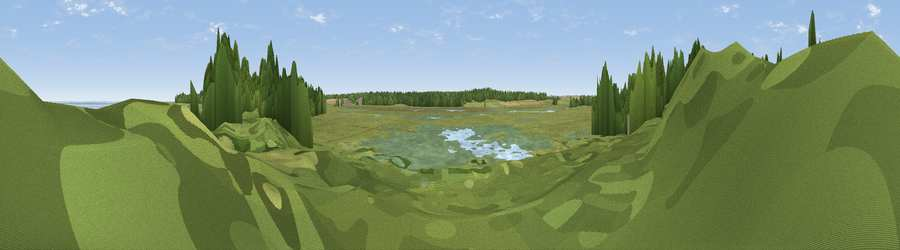

Viewpoint near Wells-next-the-Sea
#35974 in England · top 66% of its area beats it · near Wells-next-the-SeaThe view, rendered

A 360° render of this exact spot computed from the terrain model, tree cover and land cover — summer colours, afternoon light, calibrated against photographs of famous viewpoints. Real trees, hedges and buildings will differ in detail.
The panorama
Grey silhouette: terrain skyline in each direction (720 bearings, Earth curvature and refraction included). Dashed green: skyline with trees (+15 m) and buildings (+8 m) as obstacles. Blue strip: how far the ground is visible on each bearing.
Where the view opens
Wedge length = distance to the farthest visible ground on that bearing (vegetation-aware). Rings at 10, 25 and 50 km.
What fills the view
48% grassland · 18% woodland · 17% wetland · 10% water · 6% cropland
Angular shares of the visible panorama (visual magnitude), not map area. Landscape diversity 0.61 (0–1 Shannon).
Key numbers
More beautiful places nearby
The staircase of upgrades: each row has a higher view potential than everything closer. Driving times are estimates from straight-line distance, calibrated against real road routing — check an actual route before setting out.
| Place | Direction | Drive | Score |
|---|---|---|---|
| Gun Hill | WNW · 3 km | ~8 min | 48.9 |
| Viewpoint near Burnham Market | WSW · 7 km | ~14 min | 49.2 |
| Viewpoint near Morston | E · 11 km | ~22 min | 53.5 |
| Viewpoint near Salthouse | E · 18 km | ~31 min | 65.4 |
| Viewpoint near Weybourne | E · 22 km | ~37 min | 68.3 |
| Viewpoint near Claxby | NW · 92 km | ~116 min | 71.5 |
| Broombriggs Hill | WSW · 140 km | ~163 min | 74.4 |
| Viewpoint near Woodhouse Eaves | W · 140 km | ~164 min | 77.7 |
52.97113, 0.80257 · source: osm viewpoint · position refined by local search. Computed location — check access rights before visiting.